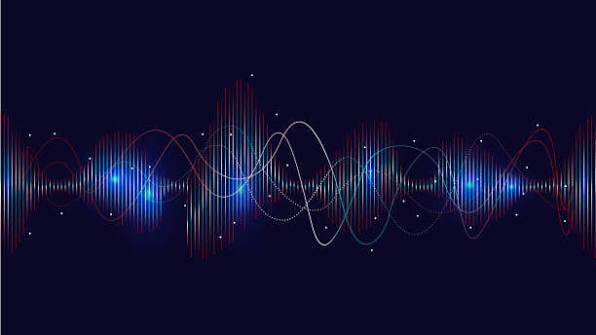

Livros
Por: Sãmily Renata
Nesse post vou comentar com vocês sobre um liro muito interessante. O segredo O best-seller O Segredo (2006), de Rhonda Byrne, baseia-se na Lei da Atração. A obra defende que os pensamentos e sentimentos emitem energia, atraindo experiências semelhantes. A chave para transformar a vida em inumeros aspectos é alinhar a mente àquilo que se deseja.
.
Primeiro paso
Por: Sãmily Renata
1. Para compreender como tudo isso funciona, primeiramente precisamo entender que, tudo o que existe no universo, desde a luz das estrelas até os pensamentos na sua mente, está profundamente conectado ao conceito de energia,Átomos em movimento: Tudo o que você toca e vê é feito de átomos. Esses átomos nunca estão parados; eles vibram constantemente. Essa vibração é uma forma de energia cinética e térmica que são feitas de energias, negativas e positivas, as duas são complementares Como tudo se move, tudo possui uma frequência de vibração.O cérebro e o coração humanos geram campos eletromagnéticos..

Finalizando
Por: Sãmily Renata
Os sentimentos controlam a frequência do campo eletromagnético do coração, funcionando como um rádio que sintoniza sua realidade. Ao vibrar em alta frequência, o cérebro ativa o Sistema de Ativação Reticular para focar na abundância e transformar suas escolhas.